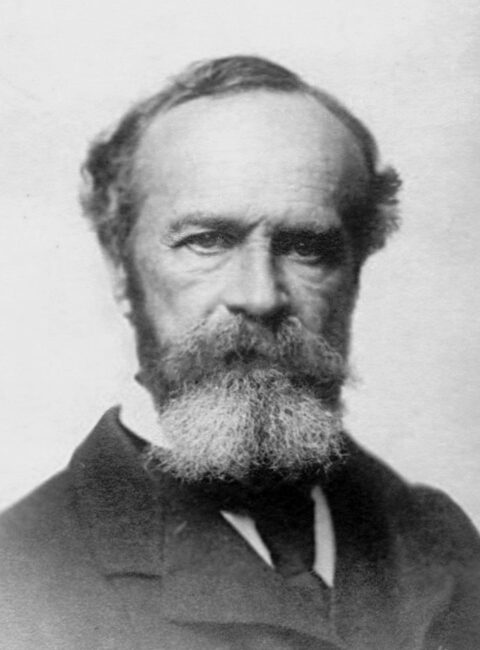

People who opened the way
A directory of biographies filtered by period and area. We avoid crediting one person with what came from many contributions.
 19th century · Germany
19th century · GermanyWilhelm Wundt
1832–1920
Experimental psychology · Voluntarism

19th century · United StatesWilliam James
1842–1910
Consciousness and emotion · Functionalism
 19th century · United States
19th century · United StatesMary Whiton Calkins
1863–1930
Memory and the self · Self psychology
 1900–1950 · United States
1900–1950 · United StatesMargaret Floy Washburn
1871–1939
Comparative psychology · Structuralism and beyond
 1900–1950 · Austria
1900–1950 · AustriaSigmund Freud
1856–1939
Clinical · Psychoanalysis
 1900–1950 · Russia
1900–1950 · RussiaIván Pávlov
1849–1936
Learning · Physiology
 1900–1950 · United States
1900–1950 · United StatesJohn B. Watson
1878–1958
Learning · Behaviourism
 1950–2000 · United States
1950–2000 · United StatesB. F. Skinner
1904–1990
Learning · Behaviourism
 1900–1950 · Germany
1900–1950 · GermanyMax Wertheimer
1880–1943
Perception · Gestalt
 1900–1950 · Germany
1900–1950 · GermanyWolfgang Köhler
1887–1967
Perception and thinking · Gestalt
 1950–2000 · Switzerland
1950–2000 · SwitzerlandJean Piaget
1896–1980
Development · Constructivism
 1900–1950 · USSR
1900–1950 · USSRLev Vygotski
1896–1934
Development · Sociocultural
 1900–1950 · United Kingdom
1900–1950 · United KingdomFrederic Bartlett
1886–1969
Memory · Cognitive (forerunner)
 1950–2000 · United States and Canada
1950–2000 · United States and CanadaMary Ainsworth
1913–1999
Development · Attachment theory
John Bowlby
1907–1990
Development · Attachment theory
 1950–2000 · United States
1950–2000 · United StatesCarl Rogers
1902–1987
Clinical · Humanism
 1950–2000 · United States
1950–2000 · United StatesAbraham Maslow
1908–1970
Motivation · Humanism
 1950–2000 · Canada and United States
1950–2000 · Canada and United StatesAlbert Bandura
1925–2021
Social learning · Social-cognitive
 1950–2000 · USSR
1950–2000 · USSRAlexander Luria
1902–1977
Neuropsychology · Sociocultural
 1950–2000 · United Kingdom and Canada
1950–2000 · United Kingdom and CanadaBrenda Milner
n. 1918
Neuropsychology · Cognitive neuroscience
 Today · United States
Today · United StatesElizabeth Loftus
n. 1944
Memory · Cognitive
 1950–2000 · Germany and United States
1950–2000 · Germany and United StatesUlric Neisser
1928–2012
Cognition · Cognitive
 Today · Israel and United States
Today · Israel and United StatesDaniel Kahneman
1934–2024
Decision-making · Cognitive
 1950–2000 · Israel and United States
1950–2000 · Israel and United StatesAmos Tversky
1937–1996
Decision-making · Cognitive
Each profile includes biography and context, research questions, contributions, collaborations and disagreements, documented anecdotes, criticism and references.